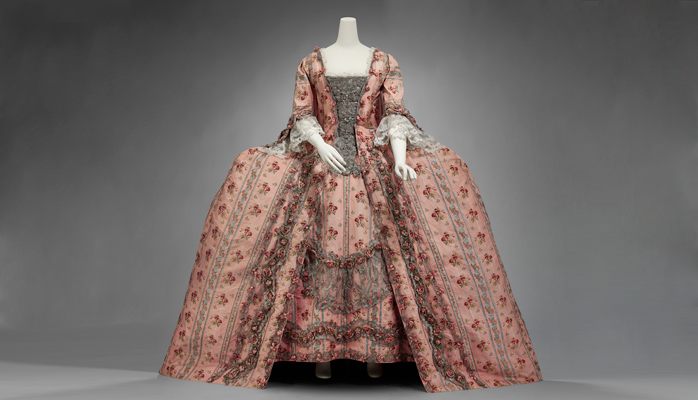

|
|
BGC Alumni |
| TEACHING | RESEARCH | BGC GALLERY | SUPPORT THE BGC |
|  | |||
|
Dear *|FNAME|*,
If you have news or events that you’re involved in that you would like to share as part of the “Alumni News” section of the April Bard Graduate Center newsletter, please submit a brief description to me by Wednesday, March 18th. You may also want take this opportunity to update your contact information if it has recently changed. To do so, please download the Alumni Directory request form, fill it out with as much information as you would like to share, and return it to me at kristen.boddy@bgc.bard.edu. |
|
Image Credit: Woman’s formal dress. France, ca. 1770. Silk and metallic thread, trimmed with metallic lace and silk flowers. Museum of Fine Arts, Boston, The Elizabeth Day McCormick Collection, 43.643a-b.
|
|
|
Forward this email to a friend. Unsubscribe from this email list. |
Bard Graduate Center: Decorative Arts, Design History, Material Culture bgc.bard.edu BGC Gallery: 18 West 86th Street, New York, NY 10024 Academic Programs and BGC Library: 38 West 86th Street, New York, NY 10024 |